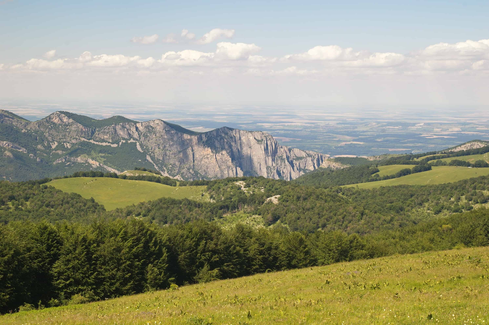

Retour
Page précédente
Page suivante
QCM : Les formations karstiques - Auto-évaluation
De l'eau et du calcaire !
1. Qu'est-ce qu'un karst ?
×
A) C'est un modelé caractéristique produit par l'érosion glaciaire en pays calcaire, se caractérisant par le développement de barres rocheuses autour de grandes dépressions.
B) C'est un type de sol, peu épais et caillouteux, se formant en pays calcaire.
C) C'est une forme de relief, se développant en région à substrat carbonaté, et caractérisé par un ensemble de formes de dissolution en surface et en sous-sol.
D) C'est une forme d'altérite en pays à substrat carbonaté avec accumulation de gélifracts produit par une cryoclastie intense en contexte périglaciaire.
Commentaire:
Un karst se développe sur des roches solubles, principalement les calcaires et dolomies. Sous l'effet de l'eau riche en CO₂, ces roches subissent une dissolution chimique qui façonne des paysages uniques, comprenant des dolines, lapiés, avens et galeries souterraines. Ce processus donne naissance à un relief distinctif en surface et à des réseaux souterrains complexes.
2. Quel est le processus majeur responsable de la formation des karsts ?
A) L'action des eaux, dissolution et reprécipitation, sur des roches relativement solubles.
B) L'enlèvement, l'entraînement et le dépôt de matières solides par un écoulement d'eau de surface ou d'eau souterraine de forte énergie.
C) La tectonisation intense de roches compétentes, se traduisant par l'effondrement de conduits, galeries et cavités souterraines.
D) L'action d'une faune cavernicole creusant tout un réseau de galeries souterraines.
Commentaire:
Les karsts se forment principalement par la dissolution chimique de roches solubles comme le calcaire ou la dolomie, sous l'action de l'eau contenant du dioxyde de carbone (CO₂). Ce processus crée des paysages caractéristiques en surface (dolines, lapiés) et des réseaux de cavités souterraines (grottes, avens).
3. Quel est l'origine du terme
karst
?

×
A) D'un mot allemand désignant une région des Balkans, à cheval sur la Slovénie et la Croatie.
B) D'un mot islandais désignant un pays au sud de l'Islande, entre le Vatnafjöll et le Katla.
C) D'un mot néerlandais désignant une ancienne colonie des Antilles Néerlandaises (île de Saint-Eustache).
D) D'un mot anglais désignant une région d'Ecosse, entre le Great Glen et les Monts Grampians.
Commentaire:
Le terme karst provient de la région du Kras (ou Karst en allemand), située dans les Balkans, entre la Slovénie et la Croatie. Cette région, connue pour ses paysages calcaires, a donné son nom aux formations et processus géologiques associés.
4. Qu'est-ce qu'un pseudokarst pour les spécialistes ?
Pseudokarst à Madagascar
×
A) C'est un karst remanié par des processus ultérieurs (érosion glaciaire ou autre) qui en ont modifié les caractères initiaux.
B) C'est un karst développé en climat subaride ou aride
C) Un modelé analogue au karst, mais se développant dans des roches salines (halite, gypse, anhydrite), voire même dans des roches comme les granites.
D) C'est un type de karst, non visible en surface, car masqué par des dépôts plus récents.
Commentaire:
Le pseudokarst désigne des formations géologiques similaires au karst mais se formant dans des roches autres que les calcaires, comme les évaporites (gypses, etc), qui subissent également des processus de dissolution.
5. Ci-dessous un extrait d'un rapport du BRGM sur les cavités souterraines dans les Hautes-Alpes. Pourquoi parle-t-on de
formes pseudo-karstiques
, et non de
formes karstiques
pour ces grottes, cavités et fissures élargies ?
×
×
A) Parce que les roches impliquées ne sont pas des roches carbonatées.
B) Parce que la karstification est inopérante en haute-montagne.
C) Parce que ces formes se sont développées sans intervention de l'eau, même si elles ressemblent aux formes karstiques.
D) Parce que les massifs de la zone interne alpine sont constitués de roches granitiques ou autres roches à priori non-karstifiables.
Commentaire:
Les formes pseudo-karstiques désignent des cavités ou fissures élargies qui ressemblent à des formes karstiques classiques, mais qui se forment dans des roches non solubles (comme les granites). Ces formes résultent de processus différents, comme la désagrégation mécanique ou chimique spécifique à ces lithologies.
6. Qu'est-ce qu'on appelle un poljé ?
×
A) une plaine en pays karstique
B) un étang en pays karstique
C) un système de culture céréalière en pays karstique
D) une prairie humide permanente en pays karstique
Commentaire:
Un poljé est une grande plaine fermée typique des paysages karstiques. Il est entouré de reliefs et souvent drainé par des pertes ou ponors qui évacuent les eaux en sous-sol, ce qui le distingue des plaines alluviales classiques.
7. Il existe un site remarquable en Slovénie, qui s'appelle le lac de Cernika. Ce lac, d'environ 10 km de long et 5 km de large, disparaît l'été. Dans quelle structure géologique caractéristique de pays karstique se trouve le lac Cernika ?
en hiver
×
en été
×
A) Un poljé
B) Un ponjé
C) Un ponor
D) Un polnor
Commentaire:
Le lac de Cernika se situe dans un poljé, une vaste plaine caractéristique des régions karstiques. En hiver et au printemps, les eaux s'accumulent pour former un lac temporaire, tandis qu'en été, elles s'infiltrent dans des pertes (ponors), laissant la plaine sèche et exploitable pour des activités agricoles.
8. Les paysage de la baie d'Halong (ou baie d'Along) au Vietnam sont renommés pour leur beauté. Comment désigne-t-on ce type de karst tropical ?
×
A) Un karst à pitons
B) Un karst à pointes
C) Un karst à pics
D) Un karst à tourelles
Commentaire:
La baie d'Halong est un exemple emblématique de karst à tourelles. Ce type de relief tropical se caractérise par des formations calcaires abruptes et isolées, qui émergent au-dessus de plaines ou de plans d'eau, évoquant des tourelles naturelles. Ces formes sont dues à l'érosion différentielle intense en climat chaud et humide.
9. Qu'est-ce qui caractérise l'écoulement des eaux dans un karst ?
A) Il y a peu de ruissellement et d'écoulement de surface (à part dans les canyons).
B) L'écoulement se répartit à part égales entre écoulement de surface et écoulement souterrain.
C) Il y a peu d'écoulement de surface ou en profondeur, les karsts étant connus pour leur aridité.
D) L'écoulement se fait essentiellement en surface, les roches calcaires étant imperméables.
Commentaire:
Les terrains karstiques sont particulièrement propices aux écoulements souterrains, car les fissures et cavités naturelles favorisent l'infiltration rapide de l'eau. Ainsi, le ruissellement en surface est limité, sauf dans des reliefs marqués comme les canyons.
10. Quelle est l'influence de la température sur la solubilité du carbonate de calcium dans la gamme de températures naturelles ?
A) La température a bien une influence, mais c'est plus compliqué que cela.
B) Le carbonate de calcium est plus soluble dans une eau chaude que dans une eau froide.
C) La température n'a pas d'effet sur la solubilité du carbonate de calcium.
D) Le carbonate de calcium est plus soluble dans une eau froide que dans une eau chaude.
Commentaire:
La solubilité du carbonate de calcium diminue avec l'augmentation de la température dans des eaux naturelles.
11. Quel est l'effet de la température sur la solubilité du CO
2
dans l'eau dans les conditions ambiantes de surface ?
A) La solubilité du CO
2
est indépendante de la température.
B) La solubilité du CO
2
augmente, puis diminue avec la température.
C) La solubilité du CO
2
augmente avec la température.
D) La solubilité du CO
2
diminue avec la température.
Commentaire:
La solubilité des gaz comme le CO
2
dans l'eau diminue à mesure que la température augmente, car l'énergie thermique détruit le réseau de liaisons hydrogène dans les solutions aqueuses.
12. Comment s'appelle l'entonnoir qui se forme à la surface d'un plateau karstique ?
×
A) Un aven
B) Un ovin
C) Un oven
D) Un avin
Commentaire:
Un aven est une dépression naturelle en forme d'entonnoir qui se développe sur un plateau karstique, souvent par effondrement ou dissolution des calcaires.
13. Comment s'appellent les ciselures ou rainures larges qui se forment à la surface des roches calcaires ?
×
A) Des lapiés
B) Des malopiés
C) Des vanupiés
D) Des lapias
E) Des bopiés
Commentaire:
Les lapiés sont des formations caractéristiques des terrains calcaires, où l'érosion chimique, due à l'eau légèrement acide, creuse des rainures, fissures ou ciselures à leur surface. Un lapiaz désigne les surfaces lapiézées.
14. Entre une roche calcaire affleurante et la même roche sous sol et couverture végétale, dans quel cas, la dissolution des carbonates est-elle plus intense ?
A) La dissolution est plus forte lorsque la roche est recouverte par de la terre végétale.
B) La dissolution est identique dans les deux cas.
C) La dissolution est plus forte lorsque la roche affleure à nu.
D) Il n'y a pas de dissolution de la roche
Commentaire:
La dissolution des carbonates est plus intense sous une couverture de terre végétale, car cette dernière favorise la production de dioxyde de carbone (CO
2
) par l'activité biologique. Ce CO
2
réagit avec l'eau pour former de l'acide carbonique, ce qui intensifie le processus de dissolution chimique des carbonates.
15. Ci-dessous un bloc-diagramme schématique d'un massif karstique. La vallée A a un profil en V, tandis que la vallée B a un profil en U (ou en auge). Comment expliquer cette différence de morphologie entre ces deux vallées voisines ?
×
A) Cela ne peut s'expliquer que par des phénomènes tectoniques
B) C'est à cause des couches marneuses
C) C'est à cause de l'action des glaciers. La vallée B est une ancienne vallée glaciaire
D) C'est parce que la vallée A est un ubac et que la vallée B est un adret
Commentaire:
Le cours d'eau en B a creusé plus profondément son lit et a entaillé les couches marneuses. Le ruissellement, la solifluxion et glissements de terrain dans les marnes mettent en porte-à-faux les calcaires, qui s'écroulent en laissant des pentes raides. La vallée devient en même temps plus large. Au contraire, dans la vallée A, le cours d'eau n'a pas atteint les marnes.
16. Quelle réaction chimique contrôle la formation d'un karst ?
A) CaCO₃ + H₂O = Ca(HCO₃)₂
B) CaCO
3
+ H
2
O + CO
2
= Ca
2+
+ 2 HCO
3
-
C) CaCO₃ + O₂ = CaO + CO₂
D) CaCO₃ + H₂O = Ca(OH)₂ + CO₂
Commentaire:
Cette réaction, CaCO
3
+ H
2
O + CO
2
= Ca
2+
+ 2 HCO
3
-
, est la principale réaction chimique dans la formation du karst. Elle se produit lorsque l'eau acide (due au CO₂ dissous) attaque les roches calcaires, entraînant la formation d'une solution d'hydrogéno-carbonate de calcium, qui est la forme soluble du carbonate de calcium.
17. Quelle est la grande particularité de la réaction de dissolution du calcaire dans une solution aqueuse ?
A) La dissolution ne dépend pas de la quantité de gaz carbonique dans le milieu
B) La dissolution est empêchée dans les milieux riches en gaz carbonique
C) La dissolution est du type : solide + H
2
O = solide-OH + H
+
D) La dissolution est favorisée dans les milieux riches en gaz carbonique
Commentaire:
La présence de CO₂ favorise la dissolution du calcaire. C'est une conséquence du principe de modération, ou principe de Le Chatelier, qui précise que l'augmentation de la quantité d'un réactant (ici, CO
2
), déplace la réaction CaCO
3
+ H
2
O + CO
2
= Ca
2+
+ 2 HCO
3
-
de la gauche vers la droite, c'est-à-dire dans le sens d'une dissolution du carbonate de calcium.
18. Quelles sont les conditions pour qu'un karst se développe ?
A) Des oxydes de fer
B) De l'air
C) Du calcaire
D) De l'eau liquide
Commentaire:
POur que se développe un karst, il faut que le massif calcaire soit situé en altitude, émergé et au-dessus du niveau de base des eaux
Corriger
Recommencer